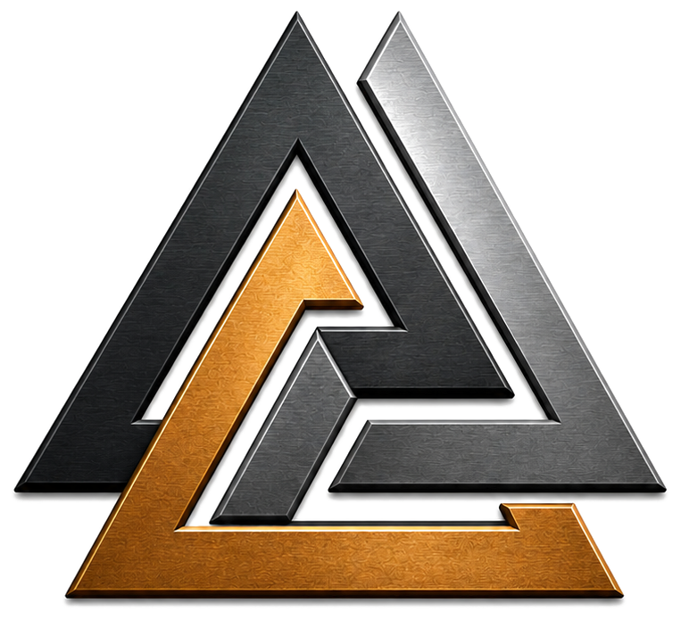

Usagaji
Upunguzaji wa ukubwa uliodhibitiwa kabla ya uachiliaji.

NORSE MINING TECH AB · NMT
NMT ni kampuni ya teknolojia na uhandisi ndani ya mfumo wa NORSE.
Mara upimaji unapotambua njia inayofaa, NMT inaendeleza na kuunganisha vifaa, uhandisi na maarifa ya kiufundi yanayohitajika kubadilisha njia hiyo kuwa mchakato unaofanya kazi.
Upunguzaji wa ukubwa uliodhibitiwa kabla ya uachiliaji.
Ubunifu wa mchakato unaozingatia uachiliaji badala ya uponzaji usio wa lazima.
Udhibiti wa ukubwa wa chembe kabla ya utenganishaji.
Uzingatiaji wa kimaumbile pale muundo wa madini unaporuhusu.
Kuunganisha vifaa kuwa mtiririko wa mchakato unaoweza kupimwa.
Uhandisi endelevu, upimaji na uboreshaji.
SWALI LA MSINGI LA TEKNOLOJIA
Utenganishaji wa mvuto, uchanganyaji wa zebaki na uyeyushaji wa sianidi vinafanya mambo tofauti kimsingi. Kuelewa tofauti hiyo ni msingi wa kwa nini NORSE inaanza na urejeshaji wa kimaumbile pale malighafi inaporuhusu.
LINGANISHA MBINU
Angalia kila mbinu inafanya nini, inahitaji nini, teknolojia ya mvuto inaendelea wapi, na kwa nini urejeshaji wa kimaumbile unapaswa kupimwa kabla ya njia ya kikemikali kuchaguliwa.
Ulinganisho pia unaanzisha njia ibukayo inayotegemea thiosulfate inayojadiliwa na NORSE.
Linganisha Mvuto, Zebaki na Sianidi →